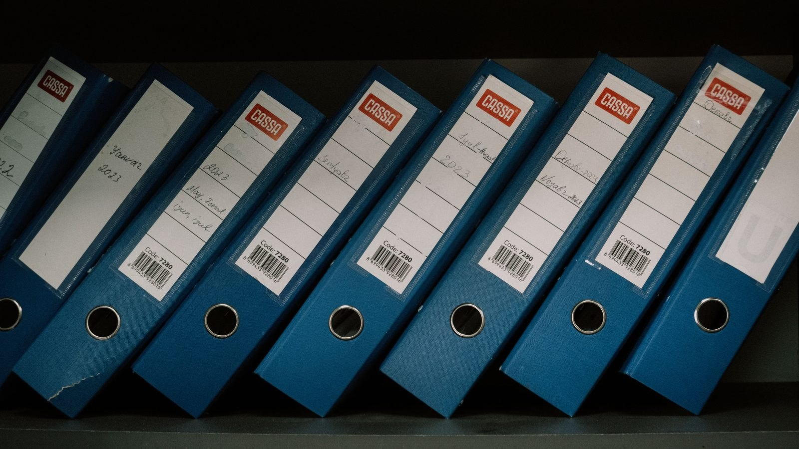

Itapema · Poder Público
Itapema · Poder PúblicoA Prefeitura de Itapema pediu urgência 37 vezes em 2026 e a Câmara aprovou as 37, enquanto 4 dos 32 pedidos feitos por vereador foram rejeitados
O atalho que leva um texto ao voto em 24 horas.
Abrimos a ficha dos 11 projetos que estavam na ordem do dia da 31ª Sessão Ordinária da Câmara de Itapema, na terça-feira 29 de setembro. A Casa aprovou os 11. Sete são de vereadores e foram lidos em plenário ainda em 2025: entre a leitura e o voto passaram de 315 a 392 dias. Os sete já tinham parecer favorável de todas as comissões desde fevereiro ou abril. Outros três textos entraram no sistema em setembro e foram votados em até seis dias. Essa contagem não existe pronta em lugar nenhum, e foi feita aqui.
Em 30 segundos · Modo de Leitura, formato original Santa Informa
A Câmara de Itapema se reuniu na terça, 29 de setembro.
Era a 31ª Sessão Ordinária do ano.
A ordem do dia trazia 11 projetos.
Todos os 11 foram aprovados.
Dez passaram por 11 a 0.
Um passou por 9 a 2.
Sete dos 11 são de vereadores.
E os sete foram lidos em plenário em 2025.
Abrimos a ficha de cada um no sistema da Casa.
Da leitura até o voto passaram 315 a 392 dias.
A média deu 359 dias.
Não foi falta de parecer.
As comissões já tinham aprovado todos.
Seis pareceres saíram em 2 e 10 de abril.
Um saiu em 6 de fevereiro.
Do parecer até o voto foram 172 a 235 dias.
Os sete foram agendados no dia 28 de setembro.
E votados na noite seguinte.
Na mesma sessão entraram quatro textos de 2026.
Dois nasceram no sistema no dia 28.
E foram votados no dia 29.
Os sete de 2025 já estão com o prefeito.
Ele sanciona ou veta.
Um deles obriga cartaz com o contato do Conselho Tutelar.
Em escola, posto de saúde e assistência social.
Outro cria a devolução voluntária de remédio na rede pública.
Poder PúblicoPublicada em Redação Santa Informa

A 31ª Sessão Ordinária da Câmara de Itapema, na terça-feira 29 de setembro, levou 11 projetos à ordem do dia e aprovou os 11. Sete são de vereadores e foram lidos em plenário ainda em 2025. Entre a leitura e o voto passaram de 315 a 392 dias, média de 359. A conta é nossa, feita abrindo a ficha de cada projeto no sistema da Casa.
O caminho de um projeto de lei tem paradas. Ele é lido numa sessão, segue para as comissões, recebe parecer e volta ao plenário para ser votado. Nos sete casos a fila das comissões já estava vencida há meses. Seis pareceres favoráveis foram registrados em 2 e em 10 de abril deste ano, e o sétimo em 6 de fevereiro. Do dia do parecer até o dia do voto passaram de 172 a 235 dias, média de 187. Os sete foram agendados para votação na tarde de 28 de setembro, dentro de três minutos, e votados na noite seguinte.
De Yagan Dadam são quatro: o PL 444/2025, do Selo Amigo da Amamentação, o 488/2025, do Centro de Informações Parceiros do Bem, o 507/2025, do programa Vozes que Constroem, e o 696/2025, que troca a ACITA pelo SINDHOTÉIS numa comissão da Lei 3.912/2019. De João Vitor de Souza são dois: o 552/2025, que obriga cartaz com o contato do Conselho Tutelar em escolas, unidades de saúde e assistência social, e o 576/2025, da Cultura Oceânica na rede municipal. De Mauro Roberto Alves Cordeiro e signatários é o 705/2025, da entrega voluntária de remédio para descarte na rede pública. Os sete passaram por 11 a 0, com uma cadeira ausente, e no dia 30 foram ao prefeito sancionar ou vetar.
A ordem do dia tinha ainda quatro projetos deste ano. O PL 601/2026, do contrato do CITMAR, entrou em 23 de setembro e foi votado seis dias depois. O 606/2026, dos adiantamentos escalonados, e o 607/2026, do aniversário da Igreja Presbiteriana no calendário oficial, nasceram em 28 e foram votados em 29. Os três chegaram ao plenário por pedido de urgência, que contamos um por um nesta manhã. O quarto é o 482/2026, da estrutura administrativa da Prefeitura, único que não passou por unanimidade: 9 a 2, com votos contrários de André de Oliveira e Yagan Dadam.
O PL 696/2025 tem um detalhe na ficha. Na noite de 11 de novembro de 2025, a mesma em que foi lido, o plenário aprovou por 12 a 0 um pedido de urgência para ele. Urgência serve para pular a fila das comissões. No dia seguinte o projeto foi encaminhado à Comissão de Legislação, Justiça e Redação Final, e só voltou ao plenário 322 dias depois. O histórico de trâmite não registra o que aconteceu entre uma coisa e outra.
O resumo de 30 segundos está no topo e a versão completa é o texto acima. Aqui ficam as três leituras da casa sobre o mesmo assunto.
Clara, a otimista
Sete leis novas saíram numa noite, e olha o que elas fazem. Cartaz com o telefone do Conselho Tutelar na porta de toda escola, posto e CRAS da cidade. Lugar certo para devolver remédio vencido. Um selo para empresa que apoia mãe que amamenta. Nenhuma dessas é obra de milhão, e todas mexem no dia a dia de quem mora aqui.
E tem uma coisa boa no meio da demora: dá para medir a demora. A Câmara publica data de criação, data de parecer, data de agendamento e placar com nome de cada vereador. Foi só por causa disso que esta matéria existe.
Seu Prudêncio, o criterioso
Merece atenção o intervalo entre o parecer e o voto. Seis dos sete estavam prontos para plenário desde o começo de abril. Sentaram na pauta por cerca de seis meses e foram todos agendados na mesma tarde, com poucos minutos de diferença entre um e outro. Isso não é atraso de comissão, porque as comissões já tinham trabalhado.
Vale acompanhar também o efeito prático. Enquanto o texto não é votado, ele não vira lei, e a obrigação que ele cria não existe. O cartaz do Conselho Tutelar é um exemplo direto: a proposta é de setembro de 2025 e a escola só vai ter que afixar depois da sanção. Uma sugestão útil para a Casa: a ficha do projeto já tem campo para tudo, e acrescentar uma linha curta explicando por que um texto pronto aguarda pauta resolveria a dúvida sem custo.
Dito isso, o resultado da noite é bom. Sete propostas de vereador viraram lei, seis delas com efeito em escola, saúde e assistência, e o placar de 11 a 0 mostra que não havia divergência de mérito. A Casa trabalhou, e o que está publicado permite que qualquer morador confira o percurso inteiro.
Caco, o sarcástico
Trezentos e noventa e dois dias. É mais que uma gestação de elefante africano, que leva uns 660, tudo bem, mas é bem mais que a de gente. O PL 444/2025 foi lido, foi para a comissão, passou o verão, passou a temporada, passou o inverno e voltou.
O melhor é o dia 28 de setembro. Sete projetos parados desde abril e todos agendados na mesma tarde, um atrás do outro, em três minutos. Alguém achou a pasta.
No fim eu não tenho do que reclamar. Sete leis novas para a cidade e placar de 11 a 0 em todas. Se demorou, demorou com transparência, data por data, de graça e sem pedir cadastro. Vou pôr um cartaz na geladeira para lembrar de devolver o remédio vencido.
Fontes: a lista dos 11 projetos saiu do roteiro da 031ª Sessão Ordinária de 29 de setembro de 2026, publicado pela Câmara de Vereadores de Itapema, e a sessão está na lista de roteiros da Casa. Cada um dos 11 teve a ficha aberta individualmente para conferir data de criação, sessão de leitura, data do parecer das comissões, data de agendamento e placar, como nesta do Projeto de Lei Ordinária 444/2025, a mais antiga das sete, e nesta do Projeto de Lei Ordinária 696/2025, que traz o pedido de urgência aprovado em novembro de 2025. O placar de 9 a 2 e os dois nomes que votaram contra estão na ficha do Projeto de Lei Ordinária 482/2026. A troca da ACITA pelo SINDHOTÉIS está na justificativa do próprio texto do PL 696/2025. A aprovação do projeto do Conselho Tutelar foi anunciada pela Casa em nota do dia 30 de setembro. As buscas de proposições estão na lista de projetos da Câmara. As somas, as médias e os intervalos de dias são contas nossas. Sobre o mesmo assunto, veja os 37 pedidos de urgência do Executivo que abrimos nesta manhã, o projeto da temporada que voltou 585 dias depois e as 83 listas de presença da Câmara que somamos em setembro.
Itapema · Poder PúblicoO atalho que leva um texto ao voto em 24 horas.
 Itapema · Infraestrutura
Itapema · InfraestruturaOutro texto que ficou parado e voltou mudado.
 Itapema · Poder Público
Itapema · Poder PúblicoA mesma régua, aplicada à presença.